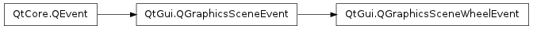

QGraphicsSceneWheelEvent ¶

Synopsis ¶
Functions ¶
- def buttons ()
- def delta ()
- def modifiers ()
- def orientation ()
- def pos ()
- def scenePos ()
- def screenPos ()
- def setButtons (buttons)
- def setDelta (delta)
- def setModifiers (modifiers)
- def setOrientation (orientation)
- def setPos (pos)
- def setScenePos (pos)
- def setScreenPos (pos)
Detailed Description ¶
The PySide.QtGui.QGraphicsSceneWheelEvent class provides wheel events in the graphics view framework.
The PySide.QtGui.QGraphicsSceneWheelEvent class provides wheel events in the graphics view framework.
PySide.QtGui.QWheelEvent s received by a PySide.QtGui.QGraphicsView are translated into QGraphicsSceneWheelEvents; it translates the QWheelEvent.globalPos() into item, scene, and screen coordinates ( PySide.QtGui.QGraphicsSceneWheelEvent.pos() , PySide.QtGui.QGraphicsSceneWheelEvent.scenePos() , and PySide.QtGui.QGraphicsSceneWheelEvent.screenPos() ).
- class PySide.QtGui. QGraphicsSceneWheelEvent ( [ type=None ] ) ¶
-
Parameters: type – PySide.QtCore.QEvent.Type Constructs a PySide.QtGui.QGraphicsSceneWheelEvent of type type , which is always QEvent.GraphicsSceneWheel .
-
Return type: PySide.QtCore.Qt.MouseButtons Returns the mouse buttons that were pressed when the wheel event occurred.
- PySide.QtGui.QGraphicsSceneWheelEvent. delta ( ) ¶
-
Return type: PySide.QtCore.int Returns the distance that the wheel is rotated, in eighths (1/8s) of a degree. A positive value indicates that the wheel was rotated forwards away from the user; a negative value indicates that the wheel was rotated backwards toward the user.
Most mouse types work in steps of 15 degrees, in which case the delta value is a multiple of 120 (== 15 * 8).
- PySide.QtGui.QGraphicsSceneWheelEvent. modifiers ( ) ¶
-
Return type: PySide.QtCore.Qt.KeyboardModifiers Returns the keyboard modifiers that were active when the wheel event occurred.
- PySide.QtGui.QGraphicsSceneWheelEvent. orientation ( ) ¶
-
Return type: PySide.QtCore.Qt.Orientation Returns the wheel orientation.
- PySide.QtGui.QGraphicsSceneWheelEvent. pos ( ) ¶
-
Return type: PySide.QtCore.QPointF Returns the position of the cursor in item coordinates when the wheel event occurred.
- PySide.QtGui.QGraphicsSceneWheelEvent. scenePos ( ) ¶
-
Return type: PySide.QtCore.QPointF Returns the position of the cursor in scene coordinates when the wheel event occurred.
- PySide.QtGui.QGraphicsSceneWheelEvent. screenPos ( ) ¶
-
Return type: PySide.QtCore.QPoint Returns the position of the cursor in screen coordinates when the wheel event occurred.
- PySide.QtGui.QGraphicsSceneWheelEvent. setButtons ( buttons ) ¶
-
Parameters: buttons – PySide.QtCore.Qt.MouseButtons
- PySide.QtGui.QGraphicsSceneWheelEvent. setDelta ( delta ) ¶
-
Parameters: delta – PySide.QtCore.int
- PySide.QtGui.QGraphicsSceneWheelEvent. setModifiers ( modifiers ) ¶
-
Parameters: modifiers – PySide.QtCore.Qt.KeyboardModifiers
- PySide.QtGui.QGraphicsSceneWheelEvent. setOrientation ( orientation ) ¶
-
Parameters: orientation – PySide.QtCore.Qt.Orientation
- PySide.QtGui.QGraphicsSceneWheelEvent. setPos ( pos ) ¶
-
Parameters: pos – PySide.QtCore.QPointF
- PySide.QtGui.QGraphicsSceneWheelEvent. setScenePos ( pos ) ¶
-
Parameters: pos – PySide.QtCore.QPointF
- PySide.QtGui.QGraphicsSceneWheelEvent. setScreenPos ( pos ) ¶
-
Parameters: pos – PySide.QtCore.QPoint